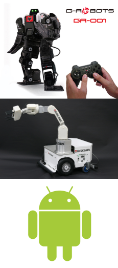
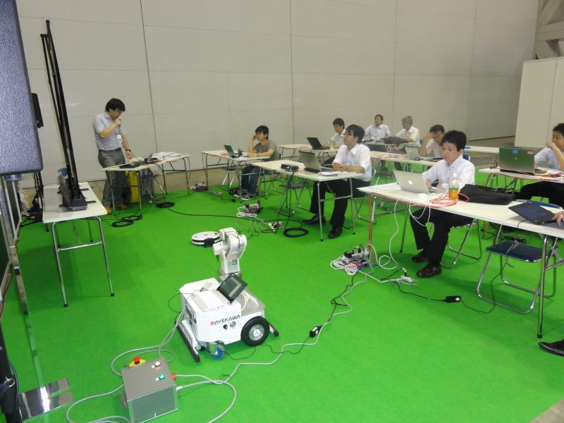
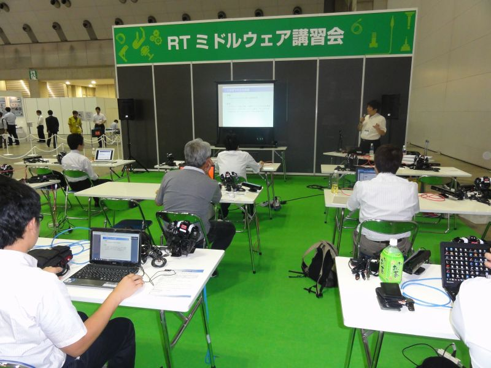
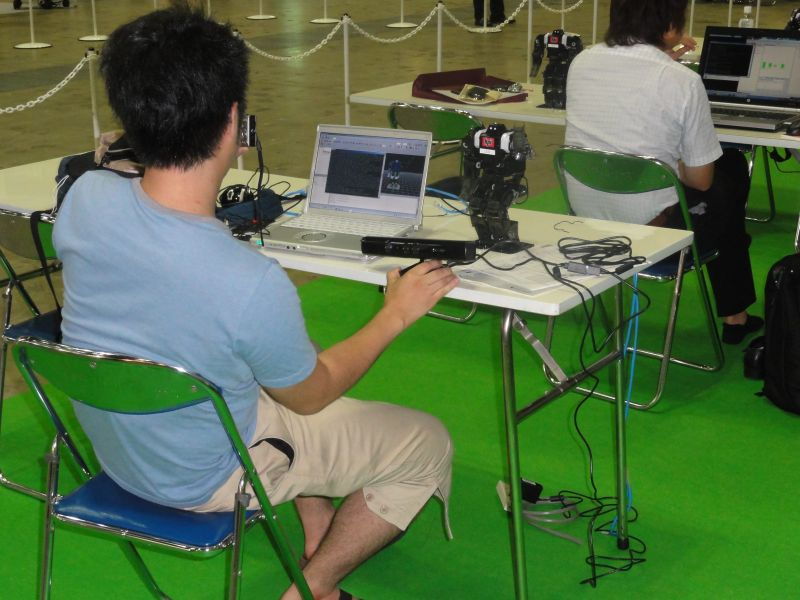
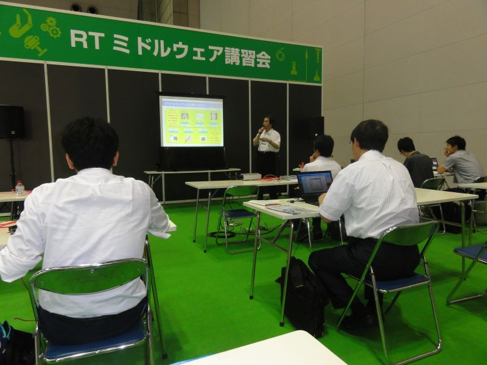
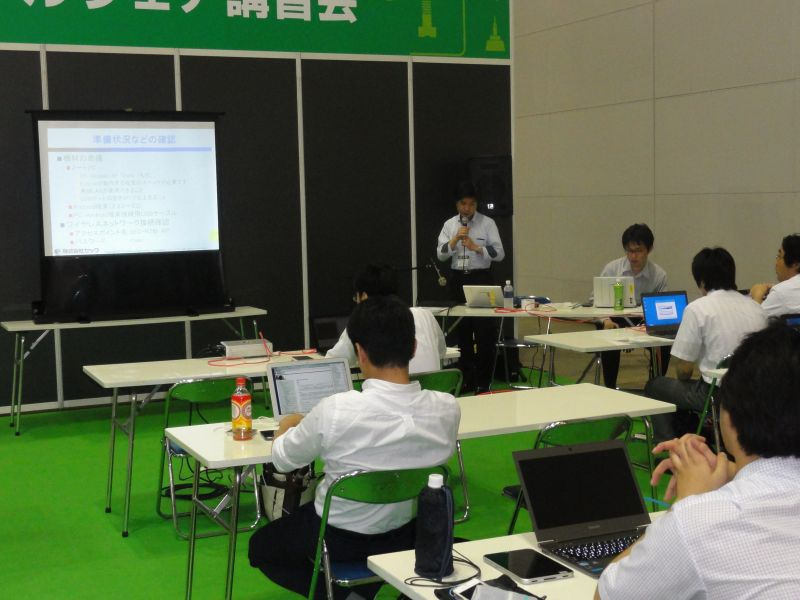
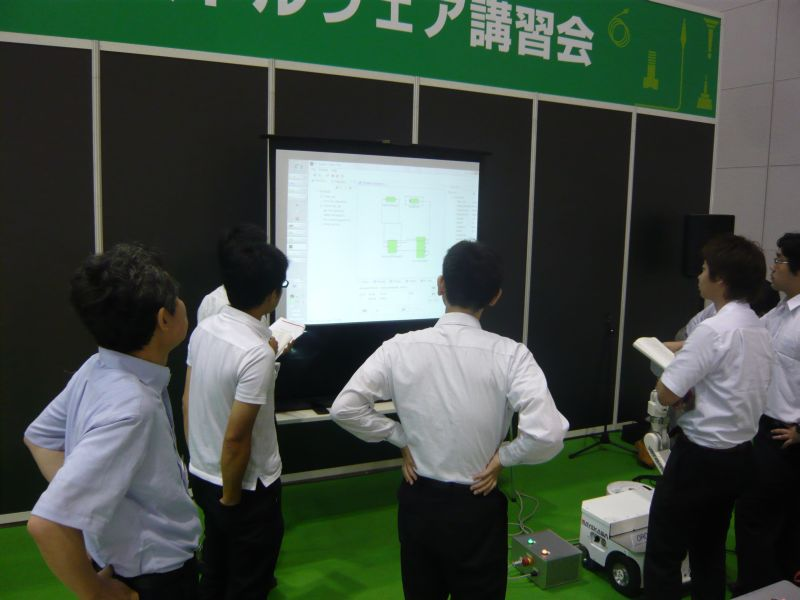
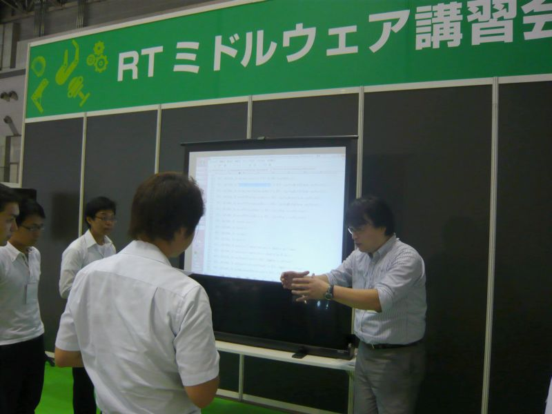

ROBOTECH RTミドルウエア講習会 (2012年7月11日～13日)

✏️ Edit this page on GitHub
#contents
ROBOTECH RTミドルウエア講習会 (2012年7月11日～13日)

2012年7月11日(水)～13日(金)、東京ビッグサイトで行われる第3回ROBOTECH次世代ロボット製造技術展 (第23回マイクロマシン／MEMS展共同開催) において、ロボットビジネス推進協議会主催のRTミドルウエア講習会が開催されました。
- 日時: 平成24年7月11日～13日 (三日間), 10:30～16:00 (受付 10:00-)
- 場所: 東京ビッグサイト 東ホール 特設会場
- 交通アクセス
- 詳細はROBOTECH Webページをご覧ください。
- 参加費: 無料
- 定員: 15名/1コマ(事前登録), 1日2コマ×3日間
- 参加者数: 49名 (3日間)
プログラム
| 時間/開催日 | CENTER: 7/11(水) | CENTER: 7/12（木） | CENTER: 7/13（金） |
| **10:00-10:30** | > | > | CENTER: 受付 |
| **10:30-12:30** | RTミドルウエア インストールワークショップ１ 講師：菅 佑樹 氏 講習概要 講演資料 |
RTミドルウエア インストールワークショップ２ 講師：菅 佑樹 氏 講習概要 講演資料 |
RTミドルウエア インストールワークショップ３ 講師：坂本 武志 氏 (グローバルアシスト) 講習概要 講演資料 |
| **12:30-13:30** | > | > | CENTER: 昼食休憩 |
| **13:30-14:00** | > | > | CENTER: 受付 |
| **14:00-16:00** | RTミドルウエア 人型ロボットワークショップ（仮題） 講師：原功 氏 （産業技術総合研究所） 講習概要 講演資料 |
RTミドルウエア リファレンスロボットアーム OROCHIワークショップ 講師：菅 佑樹 氏 講習概要 講演資料 |
RTミドルウエア Androidワークショップ（仮題） 講師：(株)セック川口 仁 氏 講習概要 講演資料 |
講師
- 菅 佑樹 氏：RTミドルウエアコンテスト ３回優勝
- 原 功 氏：独立行政法人 産業技術総合研究所
- 坂本 武志 氏: 株式会社グローバルアシスト
- 川口 仁 氏: 株式会社セック 開発本部第四開発部主任
内容紹介
RTミドルウエアインストールワークショップ(その1)
- 講師：菅 佑樹 氏
- 必要機材：WindowsXP以上が動作するPC
- 必要ソフトウエア：OpenRTM-aist-1.1.0, Python2.6, RTC Builder, RTSytemEditor, JDK7
- 概要： ロボット用の分散コンポーネントミドルウエアであるOpenRTM-aistの概要についてインストール手順から説明します。OpenRTM-aistを使うと何が出来るのか、何が便利になるのか、また実際にどのように開発するのかといった基本的内容から、コンポーネントの基本機能や開発の実際、各種ツールの利用方法など技術的内容について解説します。
- 講習概要 (7月12日分:内容は同じです)
- 講演資料・RTミドルウエア「OppenRTM‐aist」入門
RTミドルウエア人型ロボットワークショップ
- 講師：原 功 氏 （独）産業技術総合研究所（予定）
- 必要機材：Windows7以上が動作するPC （USBポートの空きが2つ以上あること、CPUは2.66GHz以上で複数コアがある方が望ましい）
- 必要ソフトウエア：OpenRTM-aist-1.1.0, RT SytemEditor, VC++2010, Choreonoid-1.1, OpenHRI, KINECT for Windows SDK
- 概要：多関節型のロボットの動作パターンを生成するためのツールであるChoreonidについて解説し、G-ROBOTを使って幾つかの動作パターンを作成する実習を行います。また、OpenHRIを用いてG-ROBOTに音声コマンドを作成していきます。
RTミドルウエア リファレンスロボットアーム「OROCHI」ワークショップ
- 講師：菅 佑樹（予定）
- 必要機材：なし
- 必要ソフトウエア：なし
- 概要：RTミドルウエアプロジェクトで開発された、RTミドルウエアの実証実験用標準機（リファレンスハードウエア）である「OROCHI」の使用法について解説します。講演とデモですので、ご用意いただくものはございません。RTミドルウエアに対応したロボットのメリットや使いこなしについて講演いたします。
RTミドルウエアインストールワークショップ(その2)
- 講師：坂本 武志 氏
- 必要機材：WindowsXP以上が動作するPC
- 必要ソフトウエア：OpenRTM-aist-1.1.0, Python2.6, RTC Builder, RTSytemEditor, JDK7
- 概要： ロボット用の分散コンポーネントミドルウエアであるOpenRTM-aistの概要についてインストール手順から説明します。OpenRTM-aistを使うと何が出来るのか、何が便利になるのか、また実際にどのように開発するのかといった基本的内容から、コンポーネントの基本機能や開発の実際、各種ツールの利用方法など技術的内容について解説します。
- その1とは内容が異なります
- 講習概要
- 講演資料・RTミドルウェアインストールワークショップ
RTミドルウエアAndroidワークショップ
- 講師：(株)セック（予定）
- 必要機材：WindowsXP以上が動作するPC （USBポートの空きが1つ以上あること）, Android端末（2.3.3～3.2）, PC-Android端末接続用USBケーブル
- 必要ソフトウエア：* OpenRTM-aist(C++) 1.0.2-RELEASE;(omni-ORB, RT SytemEditor, サンプルRTCを含む), ** RTM on Android, Androidアプリ開発環境（JDK, Android SDK,2.3.3 Eclipse[Javaの開発環境を含む]）, Android端末接続用USBドライバ（ADBコマンドが使えるようにしておく）
- 概要：（予定）株式会社セックが開発したAndroid用RTミドルウェアであるRTM on Androidの解説をし、RTM on Androidを利用したサンプルRTC開発を体験してもらい、Android端末へインストールしてPC上で動作するOpenRTM-aist(1.0.2)によるRTCとの相互接続を体験する実習を行います。 また、RTM on Androidを利用したデモ実演により、RTM on Androidの可能性を紹介します。
講習会の様子

;

;

;

;

;

;

;